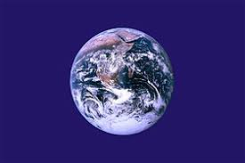
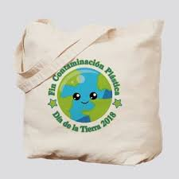

Dia Internacional de la madre Tierra 22 de abril
Realizado por:
Sara Ahuehuetl Pantle
4G
Especialidad
Programacion
Submodulo
Desarrolla Aplicaciones Moviles
Docente
Lin.Jose Antonio Gomez Hernandez
4G
Programacion
Desarrolla Aplicaciones Moviles
Lin.Jose Antonio Gomez Hernandez
Una movilización a favor de la preservación del medio ambiente, hace 46 años, alertaba a la humanidad sobre el cuidado a la Tierra.El 22 de abril se celebra el Día Mundial de la Tierra. Esta fecha fue elegida porque el 22 de abril de 1970 una manifestación en Estados Unidos para que se creara en el Gobierno una agencia ambiental que trabaje sobre las problemáticas medioambientales.
El Día de la Tierra es un día festivo celebrado en muchos países el 22 de abril. Su promotor, el senador estadounidense Gaylord Nelson, instauró este día para crear una conciencia común a los problemas de la contaminación, la conservación de la biodiversidad y otras preocupaciones ambientales para proteger la Tierra.La primera manifestación tuvo lugar el 22 de abril de 1970, promovida por el senador y activista ambiental Gaylord Nelson, para la creación de una agencia ambiental. En esta convocatoria participaron dos mil universidades, diez mil escuelas primarias y secundarias y centenares de comunidades. La presión social tuvo sus logros y el gobierno de los Estados Unidos creó la Environmental Protection Agency (Agencia de Protección Ambiental) y una serie de leyes destinada a la protección del medio ambiente.
“Madre Tierra” es una expresión común utilizada para referirse al planeta Tierra en diversos países y regiones, lo que demuestra la interdependencia existente entre los seres humanos, las demás especies vivas y el planeta que todos habitamos.La Tierra y sus ecosistemas son nuestro hogar. Para alcanzar un justo equilibrio entre las necesidades.Es por eso que celebramos el Día Internacional de la Madre Tierra para recordar que el planeta y sus ecosistemas nos dan la vida y el sustento.

es una expresión común utilizada para referirse al planeta Tierra en diversos países y regiones, lo que demuestra la interdependencia existente entre los seres humanos, las demás especies vivas y el planeta que todos habitamos. La Tierra y sus ecosistemas son nuestro hogar. Para alcanzar un justo equilibrio entre las necesidades económicas, sociales y ambientales de las generaciones presentes y futuras, es necesario promover la armonía con la naturaleza y el planeta.
La gestion integrada de paisajes requiere comprender los diferentes impactos del uso de la tierra y equilibrar los intereses a menudo contradictorios de los diferentes grupos involucrados.Imaginemos que usted forma parte del gobierno del pais X en África subsahariana. Desea cumplir con el Objetivo de Desarrollo Sostenible No. 1 que reza: “acabar con la pobreza en todas sus formas en todas partes".